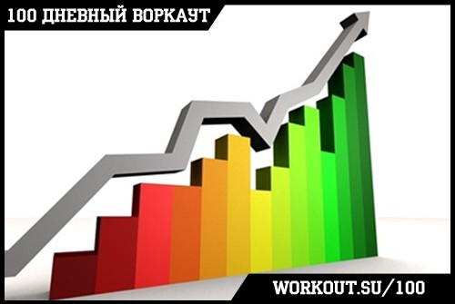
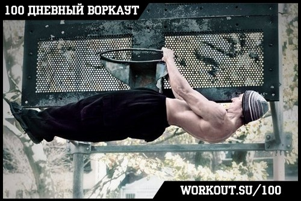
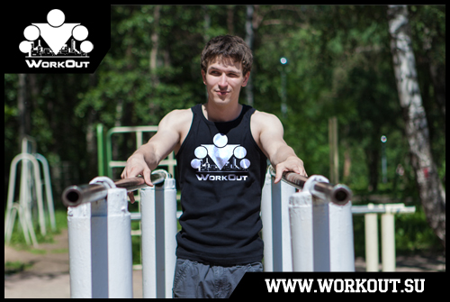
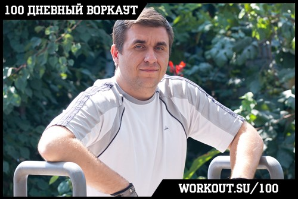

Для того, чтобы принять участие в ней вам достаточно только СИЛЬНОГО желания и готовности изменить себя! Предлагаем вашему вниманию 5 причин, по которым стоит принять участие в программе "100-дневный воркаут" :
[1] Эффективная методика

Мы провели уже семь (!!!) запусков этой программы и за это время успели накопить определённый опыт, учли предыдущие огрехи и исправили недостатки. Программа 100-дневный воркаут уже помогла тысячам людей по всему миру стать более сильными, здоровыми и красивыми! Ознакомиться с общими и индивидуальными результатами участников последнего запуска программы можно здесь.
Основу программы составят круговые тренировки в комплексах по 3-4 упражнения, выполняемые друг за другом без отдыха. При этом в программу будет изначально заложена возможность адаптировать нагрузку под свой уровень физической подготовки!
Главная наша задача состоит в том, чтобы в течение 100 дней воспитать в вас привычку к силовым тренировкам, а так же дать необходимый первоначальный багаж теоретических знаний не только в вопросах тренировок и упражнений, но так же регулировки питания, диет, психологии мотивации и других смежных областей!
Программа "100 дневный воркаут" состоит из трёх блоков:
1) БАЗОВЫЙ (с 1 по 49 день)
2) ПРОДВИНУТЫЙ (с 49 по 91 день)
3) ТУРБО (с 92 по 98 день)
Стоит отметить, что хотя наша программа и рассчитана в первую очередь на тех, кто только начинает свой путь в воркауте, или хочет привести себя в форму практически с нуля, но даже те, кто занимаются не первый год смогут найти во втором и третьем блоках много интересной и полезной информации!
[2] Тренировки когда и где угодно

Мы строим программу исключительно на упражнениях с использованием веса собственного тела и силы гравитации в качестве источника сопротивления и нагрузки. Таким образом она не только становится доступной для максимально широкой аудитории, но и позволяет проводить тренировки практически в любом месте и в любое время!
Многие недооценивают силовые упражнения с собственным весом, но они являются отличной стартовой площадкой для любого (!) вида тренировок, и мы считаем крайне важным научить вас в первую очередь управлять своим телом.
Как сказал один мудрец, если хочешь изменить мир, то начни с себя!
[3] Ведущие программы


В роли ведущих выступают Антон Олег. Важно сразу отметить тот факт, что ни Антон, ни Олег не являются профессиональными спортсменами или фитнес-тренерами. Они обычные люди, которые большую часть дня проводят сидя за компьютером (на работе и дома), и у которых не так много свободного времени. Но на собственном примере они поняли, что воркаут - это самый доступный, интересный и эффективный способ привести свою тушку в хорошую форму и готовы поделиться с вами своими знаниями и опытом!
[4] Абсолютно бесплатно
Наша программа абсолютно бесплатна для участников, поскольку главная наша цель - рассказать и показать как можно большему количеству людей возможность построения красивого, сильного, здорового и функционального тела с помощью упражнений с использованием собственного веса!
В отличии от ряда других проектов, использующих слово "воркаут" в своих названиях, мы действительно НЕ БУДЕМ пытаться вам что-либо продать, не будем пытаться вам что-нибудь навязать, и не будем что-нибудь скрытно рекламировать! В программе будет изложена вся необходимая информация, и вам останется только применить знания на практике!
Кто-то спросит, а зачем тогда вам всё это? Ответ заключается в одном из принципов философии воркаута - "каждый учит каждого". Именно благодаря этому подходу за столь короткий срок наше уличное направление смогло распространиться по всем миру. Хотя в последнее время про этот принцип стали забывать, но сейчас у нас есть чем поделиться с вами, чем-то, что может вам помочь стать лучше, и посредством программы "100 дневный воркаут" мы можем это сделать. Осознание того факта, что ты смог помочь кому-то изменить свою жизнь и стать лучше - уже само по себе отличное вознаграждение ;)
======> 5 основных целей программы